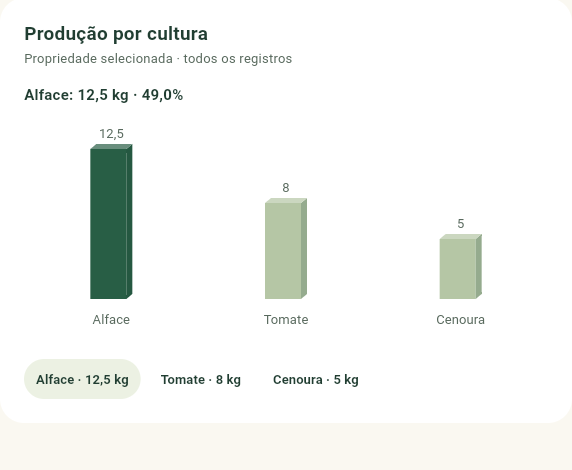
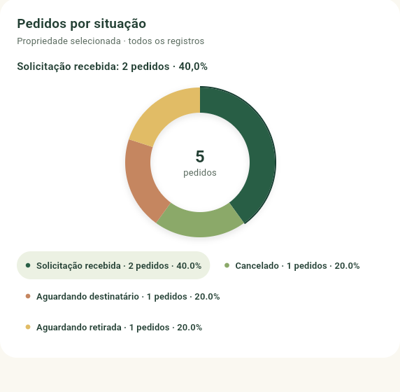

AGRO+ BRASIL · PRIMEIRA VERSÃO DESKTOP · 05/11/2026
Uma aplicação, dois contextos de uso.
Flutter Web com shell desktop específico, sem alterar apps/web ou criar outra stack. Arquitetura e fontes dos dados · Resultados e limites · Smoke real
Capturas reais de navegador e emulador. O banco isolado contém dados fictícios identificados para testar a apresentação; a aplicação conectada consulta somente registros autorizados da API, sem valores de demonstração embutidos nos gráficos.
Barras: referência × implementação real
Referência fornecida · linguagem visual Agro+ Brasil · kg por cultura, API real de teste
Agro+ Brasil · kg por cultura, API real de teste
Faces discretas, escala frontal comum, base zero, destaque da seleção e valores absolutos. Três culturas efetivamente disponíveis; sem meses, faturamento ou metas inventadas.
Rosca: referência × implementação real
Referência fornecida · composição circular Agro+ Brasil · situação dos pedidos
Agro+ Brasil · situação dos pedidos
Ângulos proporcionais à contagem, paleta agrícola, sombra leve e seleção na borda; legenda acessível com correspondência de cor, valor e percentual. Nenhuma perspectiva que altere a leitura quantitativa.
Resoluções, navegação e estados
74 testes Flutter; 23 unitários e 36 de integração backend. Analisador sem apontamentos. Hover/clique, autenticação, navegação e permissões exercitados em navegador real. Minha Fazenda e Inteligência Hídrica permanecem fora do escopo. Sem commit ou push.
Referências são arquivos locais ignorados pelo Git, usados somente nesta comparação; não são assets publicados do aplicativo.